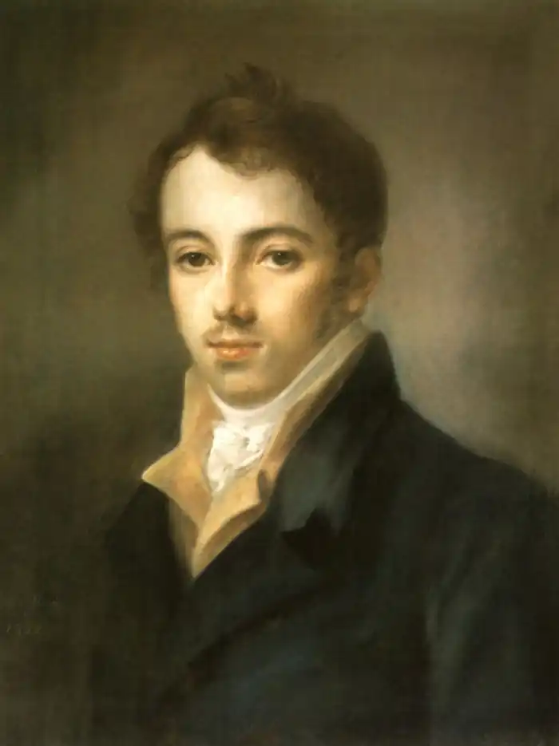

Фонвізін Денис Іванович (1745–1792) – драматург, публіцист, перекладач.
Народився 3 квітня 1745 в Москві. Походив із старовинного дворянського роду (лівонський лицар фон Візін був узятий в полон при Іоані IV, потім став служити російському цареві). З 1755 Денис Фонвізін навчався в гімназії при Московському університеті, де успішно вивчав латинську, німецьку і французьку мови і виступав на урочистих актах з мовами на російській і німецькій мовах.
У 1762 Фонвізін пішов з університету і вступив перекладачем в колегію закордонних справ. У 1763 після коронаційних торжеств в Москві разом з двором переїхав в З.-Петербург і до 1769 служив під керівництвом радника палацової канцелярії І. П. Елагина, який, будучи таким, що управляє "придворної музики і театру", протегував початкуючим літераторам. Самобутнім і новаторським твором стала його комедія "Бригадир" (1768–1769). Це перша в російській літературі "комедія вдач", на відміну від тієї, що панувала раніше сатиричної "комедії характерів", коли на сцену виводилися персоніфіковані пороки ("скупість", "похваляння" і тому подібне). У 1760-х, в епоху Комісії для складання Нового Укладення (1767), Фонвізін висловлювався і по тому, що хвилював всіх питанню прав і привілеїв дворянства. Він переводить трактат Г.-Ф. Куайе Торгуюче дворянство (1766), де обгрунтовувалося право дворянина займатися промисловістю. Пізніше Фонвізін з гордістю писав, що ця повість "послужила мені самому до спонукання до сльози у людей чутливих. Бо я знаю багато, які, читаючи Іосифа, мною переведеного, проливали сльози". У 1769 Фонвізін став одним з секретарів канцлера графа Н. І. Паніна, що будував плани дострокової передачі престолу Павлу Петровичеві і обмеження самодержавства на користь Верховної Ради з дворян. Зробившись незабаром довіреною особою Паніна, Фонвізін поринув в атмосферу політичних проектів і інтриг. У 1770-х він лише двічі виступив як літератор – в Слові на одужання Павла Петровича (1771) і переведенні Слова похвального Марку Аврелію А.Тома (1777). Після опали і відставки Н. І. Паніна вийшов у відставку і Фонвізін (у березні 1782). У 1782–1783 "по думках Паніна" він вигадав Міркування про неодмінні державні закони (т.з. Заповіт Паніна), яке повинне було стати передмовою до П. І. Панінимі проекту "Фундаментальних прав, незастосовних на всі часи жодною владою, що готувався, але нездійсненому" (тобто, по суті, проекту конституційної монархії в Росії). Пізніше це Заповіт Паніна, багатий випадами проти самодержавства використовували в пропагандистських цілях декабристи. Відразу ж після смерті заступника (березень 1783) Фонвізін вигадав брошуру Життя графа Н. І. Паніна, що вийшло в З.-Петербурге спочатку французькою мовою (1784), а потім і на російському (1786). Славу і загальне визнання Фонвізіну доставила комедія. Про незвичайний успіх п'єси при її першій постановці на придворній сцені свідчив невідомий автор "Драмматічеського словника" (1787): "Незрівнянно театр був наповнений, і публіка алодувала п'єсі метанням гаманців". Це "комедія вдач", жівопісующая домашній побут дикої і темної сім'ї провінційних поміщиків. В центрі комедії – образ пані Простакової, самодурки і деспота у власній сім'ї і тим більше серед своїх селян. Її жорстокість в обігу з тими, що оточують компенсується безрозсудною і палкою ніжністю до сина Мітрофанушке, який завдяки такому материнському вихованню зростає розпещеним, грубим, неосвіченим і абсолютно непридатним до будь-якої справи. Сучасників понад усе в Недоростку полонили розсудливі монологи Стародума; пізніше комедію цінували за колоритну, соціально-характерну мову персонажів і барвисті побутові сцени . У 1783 княгиня Е. Р. Дашкова залучила Фонвізіна до участі в журналі, що видавався нею, "Співбесідник російського слова". У тому ж журналі в 1783 без заголовка і підпису були опубліковані політично гострі і зухвалі "питання" Фонвізіна, адресовані Катерині II і забезпечені "відповідями" самої імператриці, яка спочатку автором "питань" вважала І. І. Шувалова. Істина незабаром з'ясувалася, і таким чином Фонвізін своїм "свободоязичием" накликав на себе незадоволення влади і надалі випробовував скрути з публікацією своїх праць. До 1788 він підготував своє Повне зібрання творів і перекладів в 5-ти томах: була оголошена підписка, проте видання не відбулося, і навіть рукопис його тепер втрачений. У тому ж 1788 він безуспішно добивався дозволу на видання авторського журналу "Друг чесних людей, або Стародум" (частина підготовлених Фонвізіним матеріалів журналу побачила світло лише в 1830). Останніми роками здоров'я Фонвізіна сильно погіршало (у 1784–1785 він виїжджав з дружиною для лікування до Італії) і в той же час зросли його релігійні настрої. Вони відбилися в автобіографічному вигадуванні – Чистосердечне визнання в справах моїх і подумуваннях (1791). Остання його комедія, що збереглася неповністю, Вибір гувернера (між 1790 і 1792), присвячена, як багато в чому і Недоросток, питанням виховання, проте сильно поступається останньою в художньому відношенні. Помер Фонвізін 1 грудня 1792 в З.-Петербурге після вечора, проведеного в гостях в Г.Р. Державіна, де, по відгуках присутніх, був веселий і жартівливий. Похований на Лазаревському кладовищі Олександро-Невської лаври.